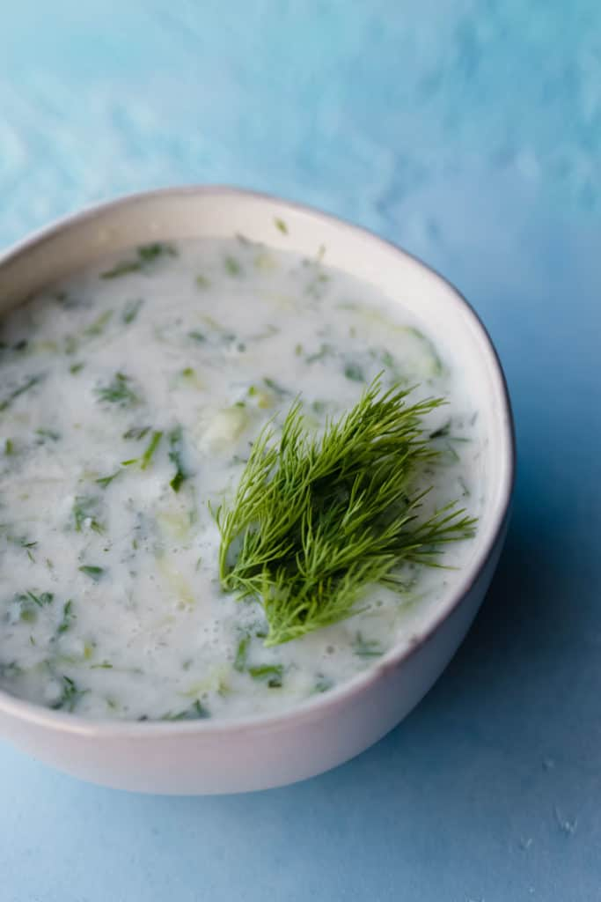

Cacık

This vegan tzatziki can be enjoyed as the familiar dip or as an excellent
appetizer to excite your palate. There's a high chance that you've never
tried the second way!
Ingredients
- 1 medium cucumber, grated (Persian variety works best)
- 1 cup dairy-free yogurt
- 3 cloves garlic (minced)
- 1/4 cup fresh dill, finely chopped
- pinch of salt
- cold water (optional, up to 1 cup for a soupy consistency)
Directions
-
Add all the ingredients except water into a medium bowl and whisk. If
you want a dip—that's it!
-
For a soupy version (Turkish), add water to reach the consistency that
you prefer.